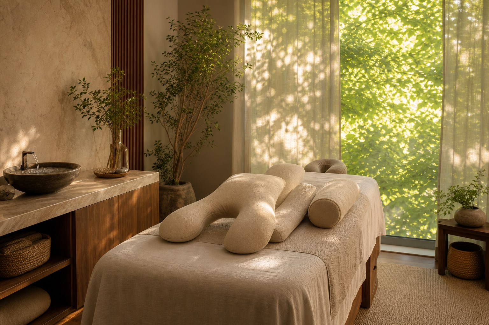
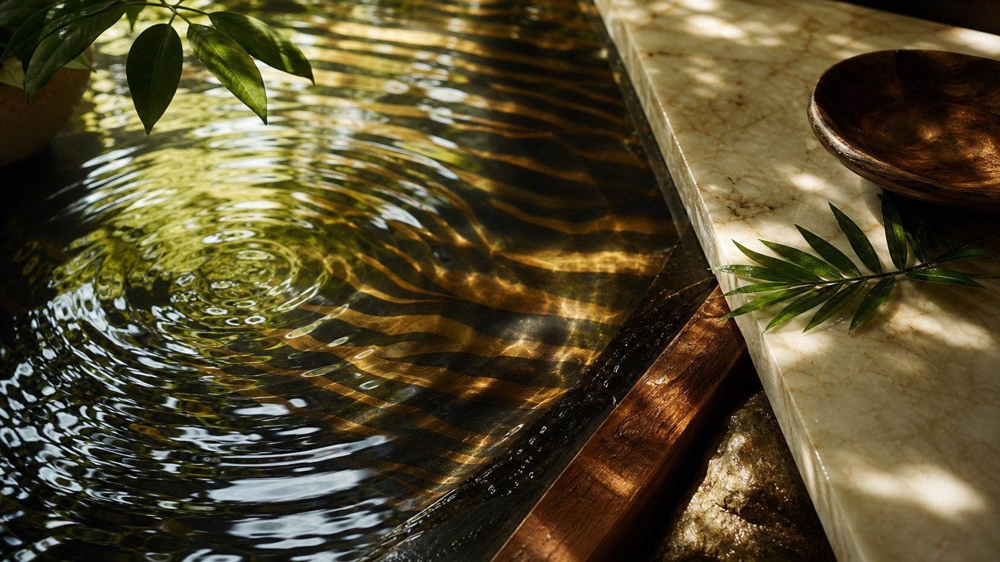
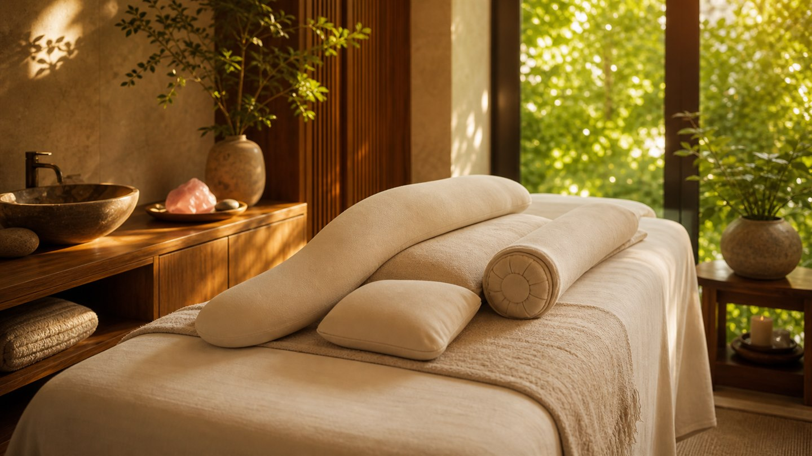
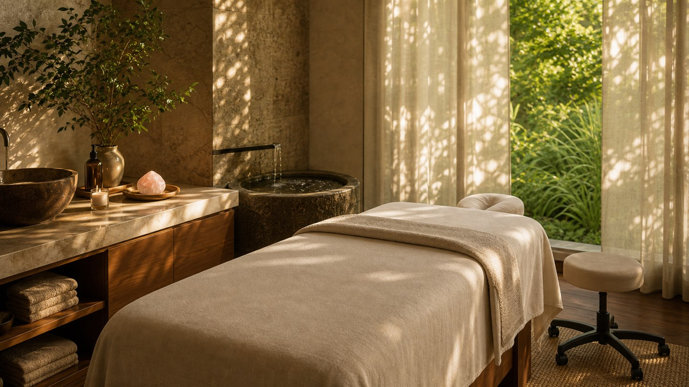
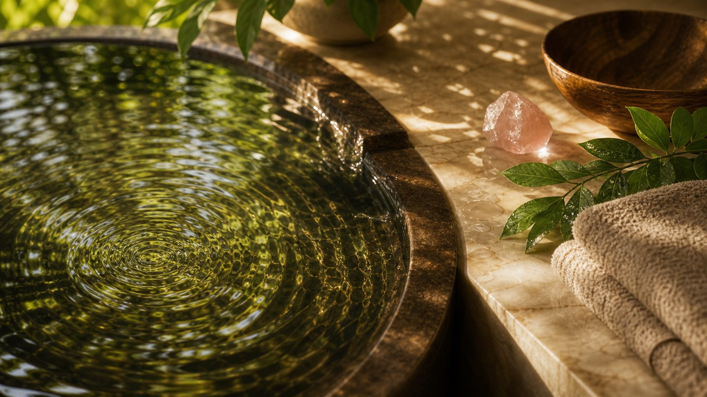

Guided intake before the table
The Rose Session Map turns pain, bracing, swelling, pressure preference, and room tone into a care summary Rose can review before confirming the appointment.
Las Vegas therapeutic massage specialist
Gentle therapeutic bodywork for prenatal comfort, stress recovery, lymphatic flow, chronic tension, and sensitive bodies that respond best to patience over pressure.
A different kind of massage room
Rose's work feels emotionally intelligent and technically attentive. Guests understand what happens, why it helps, and how they will be protected before the session begins.
The atmosphere is rooted in wood, water, canopy light, fine stone, and a quiet tiger-spirit confidence that stays elegant instead of loud.
Built from better spa patterns
Rose Quartz Massage combines the practical booking clarity of strong local clinics with the sensory, personalized feeling of a destination spa. The difference is that the care plan starts with the body you arrive with, not a generic menu category.
The Rose Session Map turns pain, bracing, swelling, pressure preference, and room tone into a care summary Rose can review before confirming the appointment.
Gentle work is framed as skilled strategy for sensitive nervous systems, prenatal bodies, headache patterns, grief, burnout, and guests who brace under force.
Guests leave with practical aftercare, hydration cues, journal education, and a rebooking rhythm shaped by how their body responds instead of a sales script.

Meet Rose
Rose Quartz Massage is named for the soft pink stone associated with unconditional love, compassion, and heart-centered healing. For Rose, that symbolism becomes a practical standard of care: gentle touch, clear consent, emotional warmth, and a room where the body does not have to defend itself.
Rose brings a warm, expressive presence to therapeutic massage, with a style that feels attentive and deeply personal. Her work is especially suited for people who need their body to feel safe before it can soften: prenatal guests, highly sensitive clients, people carrying grief or stress, and anyone who has felt overworked by traditional pressure-heavy massage.
Her sessions begin with careful listening and continue through responsive touch, supportive positioning, and clear consent. The experience is quiet when it needs to be quiet, conversational when that helps, and always shaped around the person on the table.
Specialized care menu
Rose can start with these signature pathways and expand into additional specialties as her practice grows.
View the full service menu View session pricing
Side-lying and bolstered care for expectant mothers who need relief without feeling overworked. Sessions can focus on hips, low back, neck, feet, swelling, sleep support, and emotional decompression.
Feather-light, slow work for burnout, grief, anxiety, overwhelm, or guests who brace under normal massage pressure.
View serviceCareful neck, scalp, jaw, face, and shoulder work for screen tension, clenching, and recurring headache patterns.
View serviceGentle rhythmical touch to support swelling, heaviness, sluggish recovery, travel fatigue, and pregnancy comfort.
View serviceCustomized Swedish, myofascial, or therapeutic work for muscle tension, mobility, sleep, and whole-body restoration.
View serviceA quiet add-on for guests who want breath, stillness, warm stones, aromatics, and a more ceremonial pace.
View serviceA future-ready path for seniors, highly sensitive guests, caregivers, post-event recovery, and gentle mobility support.
View service
Rose's method
Rather than asking guests to choose a generic modality, the intake identifies the kind of support their body is asking for. It gives Rose a memorable signature system and makes the booking process feel guided.
Medical notes, boundaries, pressure, and positioning.
How the body arrives and where it is bracing.
Lymph, circulation, swelling, or heaviness.
Neck, hips, back, jaw, shoulders, and gait patterns.
Sound, lighting, temperature, and conversation preference.
The emotional tone the guest wants to set down.
Aftercare, hydration, pacing, and rebooking rhythm.
How Rose reads the room
Rose's care style is expressive, warm, and responsive, but the session stays grounded in what your body actually shows her. The website should feel the same way: intuitive, human, and practical.
Rose notices how a guest moves, guards, settles, breathes, and receives touch. The future intake should let clients map body areas, movement limits, pressure tolerance, and comfort needs without forcing them into medical language.
Her second layer is voice: what guests say, what they hesitate to say, and how they describe relief. The booking flow can support short voice-style prompts, guided questions, and plain-language summaries.
Visuals should confirm the care plan rather than overwhelm it. A simple body map, color-coded comfort zones, and a Rose-reviewed session card can help clients feel seen before the appointment.
The guest journey
Guests receive what to expect, how to prepare, contraindication reminders, and a note that light touch is a strength, not a lesser massage.
Rose checks pressure, positioning, temperature, and silence preferences without making the guest manage the whole session.
Aftercare guidance, suggested focus for next time, and a simple rebooking cadence help the therapeutic arc continue.
Rose Care Compass
Choose what you need, what your body is carrying, and the tone that would help you feel safe. The compass suggests a care pathway you can send into the booking request.
Begin with quiet grounding, feather-light pressure, and slow breath-led work for a sensitive body carrying stress.
Request care
Share what your body needs, choose a session length, and Rose will confirm the best appointment path for your care.
Begin with the areas asking for care, then choose what you are feeling. Your choices become a care summary Rose can review before confirming the appointment.
Water Return Ritual
Rose's aftercare should feel as intentional as the session itself: simple, sensory, and specific enough to carry into the rest of the day.
Keep the first hour soft: water nearby, dimmer light, loose clothing, and no immediate rush back into high-output tasks.
Health philosophy journal
Rose writes for guests who want to understand their bodies, prepare for care, and build restoration into daily life.

PregnancyA calm explanation of positioning, safety, swelling support, and how comfort changes by trimester.
Read the guide
Nervous systemRose's guide to pressure consent, sensitivity, trauma-aware pacing, and why slowing down can unlock relief.
Read the guide
RitualA signature philosophy piece tying her nature-inspired practice to practical aftercare and daily grounding.
Read the pieceGuest questions
Yes. Light-touch work can support relaxation, lymphatic flow, pain sensitivity, stress recovery, and body awareness. Rose can always adapt pressure when a guest wants more focused structural work.
Pregnant guests should follow their medical provider's guidance. The intake should ask trimester, contraindications, positioning needs, and any symptoms that require medical clearance.
Yes. A session can combine prenatal comfort with lymphatic flow, headache care with nervous-system calming, or therapeutic massage with a quieter ritual pace.
Choose 60 minutes for focused relief, 90 minutes for full-body specialist care, and 120 minutes when you want a slower ritual pace with extra time for transitions and aftercare.
Share pregnancy stage, provider guidance, recent surgery, swelling changes, injury, infection, clotting concerns, scent sensitivity, and pressure boundaries. Rose's care standards explain when medical guidance should come first.